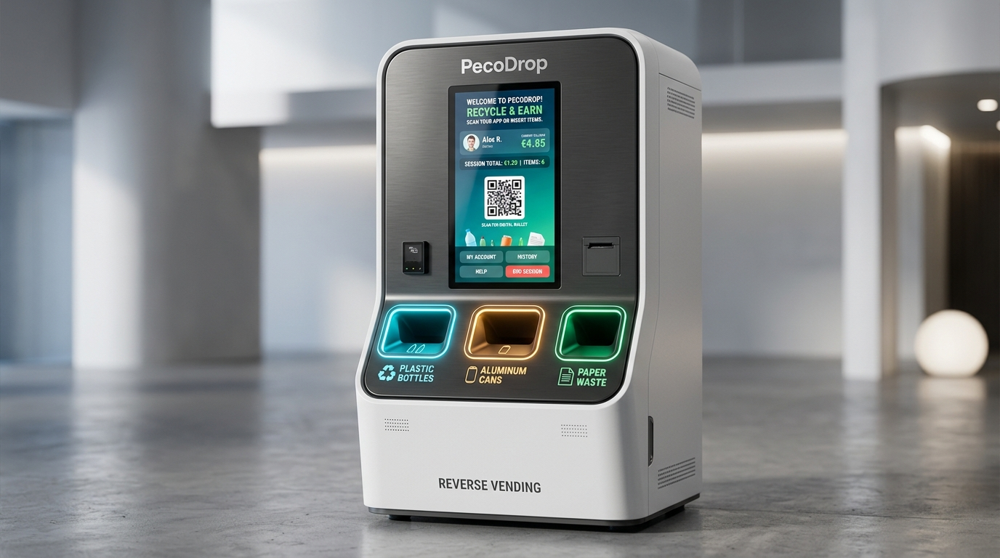
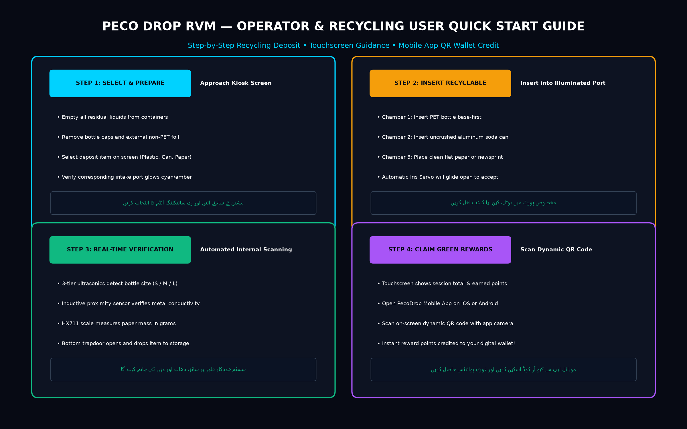

The PecoDrop 3-Chamber Reverse Vending Machine (RVM) is an automated electromechanical kiosk engineered for high-throughput collection, automated sorting, volumetric sizing, material purity verification, and instant digital reward disbursement for consumer recyclables.

Follow the 4-step interactive procedure to deposit items and earn instant digital Green Points:

Stand before the kiosk. On the touchscreen, select Plastic Bottles, Aluminum Cans, or Paper. The designated intake port softly illuminates.
Ensure containers are empty of liquids. Insert into the active port. The automatic upper iris aperture gate glides open (10° to 120°) to accept the item safely.
Iris closes. The internal array scans: height ultrasonic beams for bottles, inductive sensor for aluminum purity, or load cell for paper mass. The bottom drop gate discharges into the internal hopper.
Session summary appears on screen. Launch the PecoDrop Mobile App, tap Scan QR, and scan the on-screen code to credit points immediately to your digital wallet!
| Recycling Stream | Intake Port | Accepted Items | Strictly Rejected Items |
|---|---|---|---|
| PET Plastic Bottles | Chamber 1 (Cyan Glow) | • Clear & tinted PET bottles (250ml – 2.5L) • Water, soft drink & juice bottles • Clean empty containers |
• Containers with liquid contents • Crushed or flattened bottles • Glass bottles, motor oil cans • PVC pipes and household plastics |
| Beverage Cans | Chamber 2 (Amber Glow) | • Standard 330ml / 500ml aluminum cans • Slim 250ml energy drink cans • Clean tinplate food beverage cans |
• Severely crushed/shredded metal foil • Pressurized aerosol spray cans • Plastic coated metal composites • Batteries or electronic scrap |
| Paper Wastage | Chamber 3 (Emerald Glow) | • White office paper, letters, notebooks • Newspapers, magazines & brochures • Clean flattened cardboard packaging |
• Wet, grease-soaked, or food-soiled paper • Thermal receipts & carbon paper • Styrofoam & plastic bubble wrap • Heavy metal binders & large clips |
| System State | English Display Banner | Urdu Audio/Visual Guidance (اردو) |
|---|---|---|
| Kiosk Ready | System Ready. Please insert plastic bottle, can, or paper. | مشین تیار ہے • برائے مہربانی پلاسٹک کی بوتل، کین، یا کاغذ داخل کریں |
| Item Accepted | Object Accepted. Scanning size & material purity... | آئٹم قبول کر لیا گیا • سائز اور میٹریل کی جانچ جاری ہے |
| Plastic Sized | Plastic Bottle verified: Medium Tier (+15 Points). | پلاسٹک کی بوتل تصدیق شدہ: درمیانی سائز (+15 پوائنٹس) |
| Metal Verified | Aluminum Can verified: 100% Metal (+20 Points). | ایلومینیم کین کی تصدیق مکمل (+20 پوائنٹس) |
| Paper Weighed | Paper mass logged: 0.185 kg (+25 Points). | کاغذ کا وزن کامیابی سے ریکارڈ کیا گیا (+25 پوائنٹس) |
| Session Finished | Session Complete! Scan dynamic QR code on screen. | سیشن مکمل! اسکرین پر موجود کیو آر کوڈ اسکین کریں |
| Error / Jam | Chamber intake blocked. Attendant alerted. | چیمبر میں رکاوٹ • عملے کو مطلع کر دیا گیا ہے |
To ensure high availability and prevent jams, attendants must execute this workflow daily:
PecoDropDesktopApp has opened COM port at 115200 baud.CALIBRATE. Confirm CALIBRATION:OK and MACHINE:IDLE appear on logs.STOP via console. All servos lock to 10° immediately.